SINGLE RING INFILTROMETER
Objective:
To find the rate of infiltration or the rate at which water enters in soil.
Apparatus used:
Single Ring Infiltrometer(diameter of 15cm and 30cm ring), Hammer, Water Level Indicator, Stopwatch, etc.
 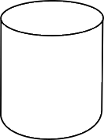
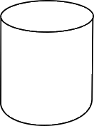
.png "Diameter of ring 30cm") 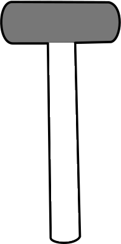
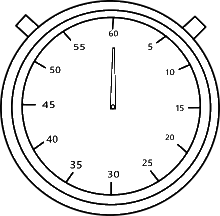
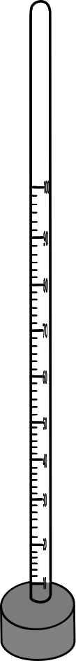
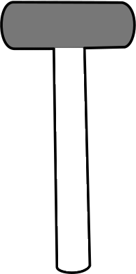
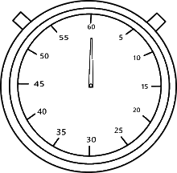
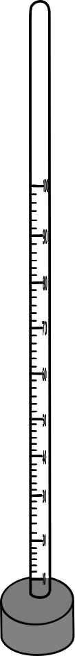

Description
Infiltrometer: is an experimental device to obtain the volume of water from entering into soil at various time intervals.
Select the diameter of ring for the trial.
.png)

Place ring and hammer the ring of the infiltrometer into the soil using driving plate.
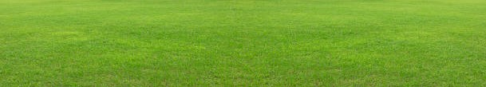 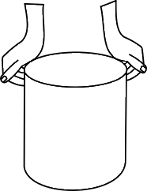 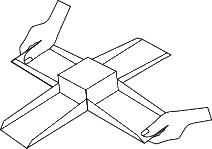 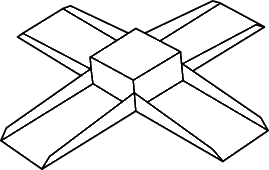 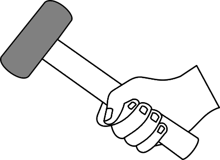 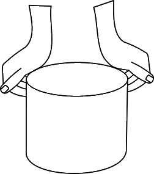
Place the water level indicator inside the ring and note down the readings of the water level.
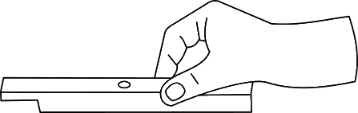 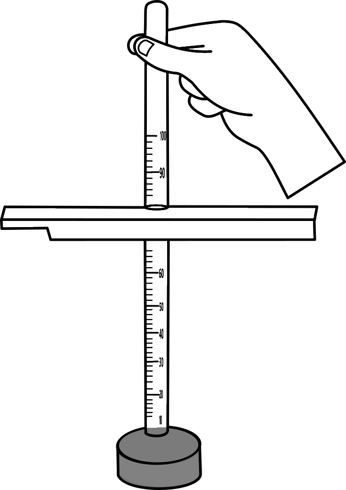 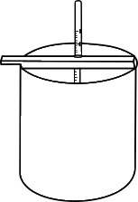
 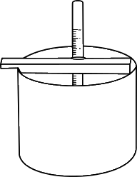
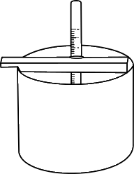
Fill the ring with water.
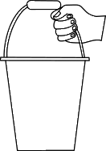 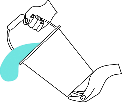.png) 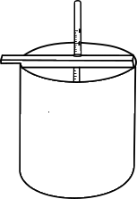
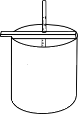

Fill the ring with water.
.png)
.png)
.png)
.png)
.png)
| Time difference (start time 0) (min) | Time difference (start time 0) (min) | Final Level before filling (mm) | Change in water level/infiltration (mm) |
|---|
| Time difference (start time 0) (min) | Time difference (start time 0) (min) | Final Level before filling (mm) | Change in water level/infiltration (mm) |
|---|
Observations and Calculations.
| Time difference (start time 0) (min) | Time difference (start time 0) (min) | Final Level before filling (mm) | Change in water level/infiltration (mm) | Infiltration Rate (mm/min) | Cumulative Infiltration (mm) |
|---|
| Time difference (start time 0) (min) | Time difference (start time 0) (min) | Final Level before filling (mm) | Change in water level/infiltration (mm) | Infiltration Rate (mm/min) | Cumulative Infiltration (mm) |
|---|
Cumulative Infiltration = Please Enter Value to proceed
Average Infiltration = Please Enter Value to proceed
Cumulative Infiltration = Please Enter Value to proceed
Average Infiltration = Please Enter Value to proceed
Inference:The initial infiltration rate is higher, however as the soil pores get filled with water infiltration rate gradually decreases and reaches steady state.